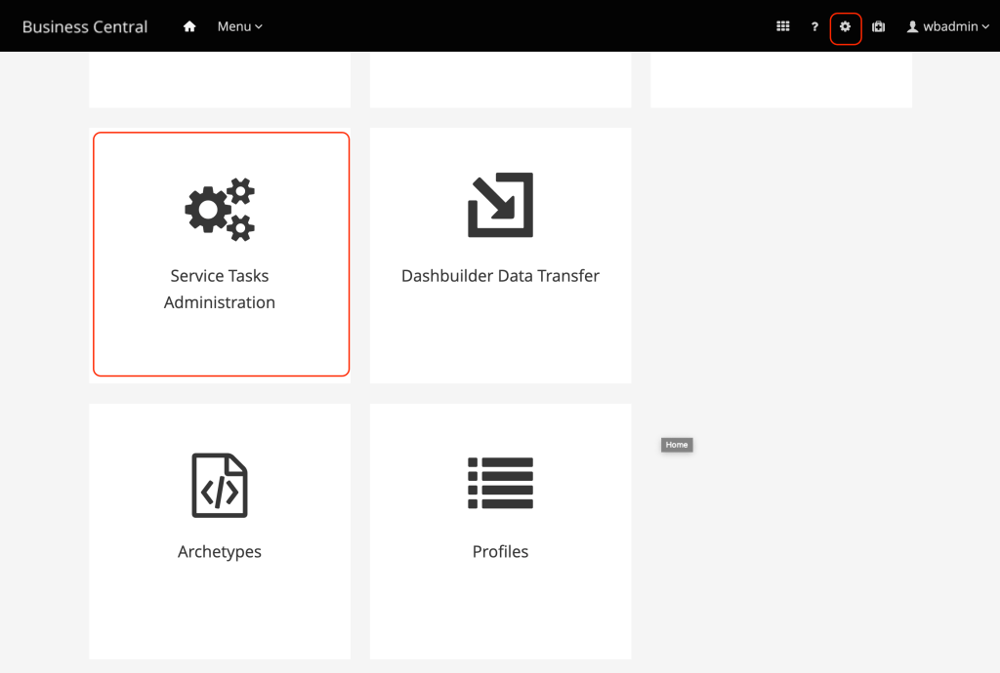
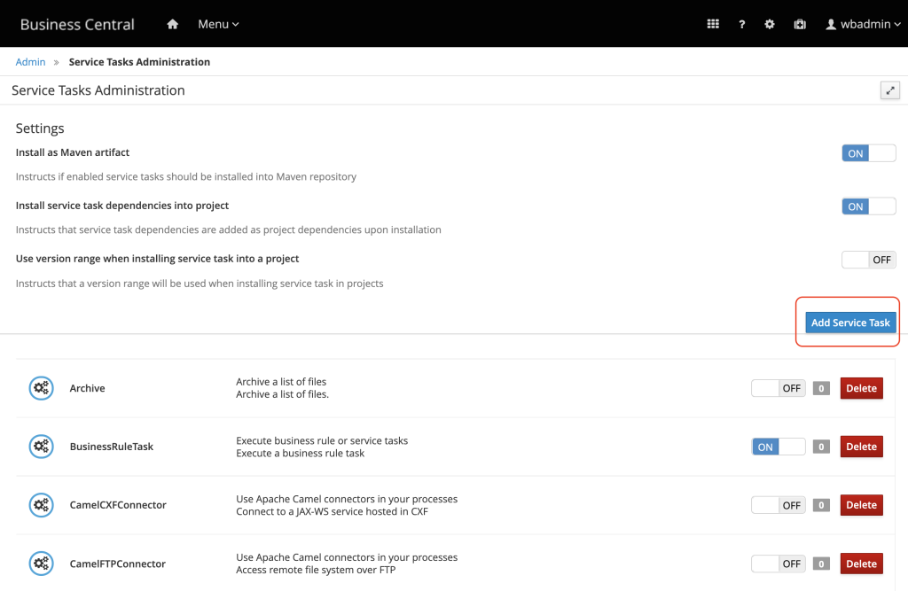
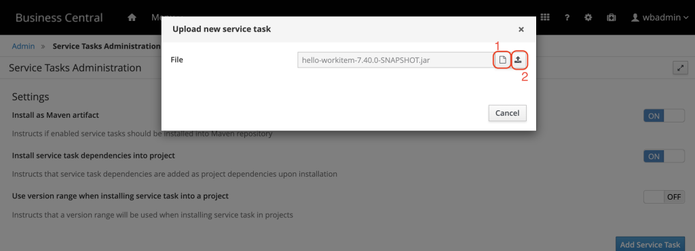
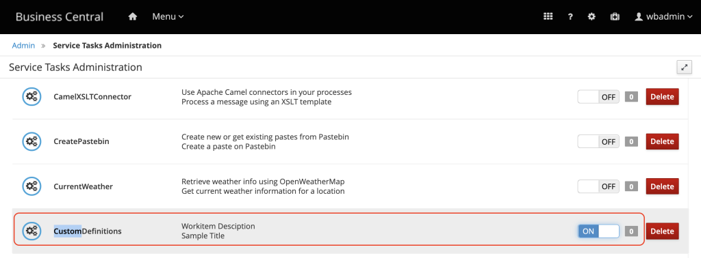
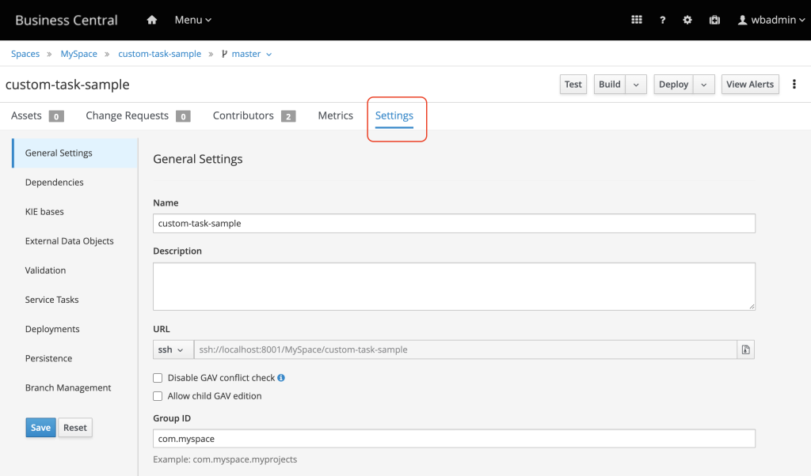
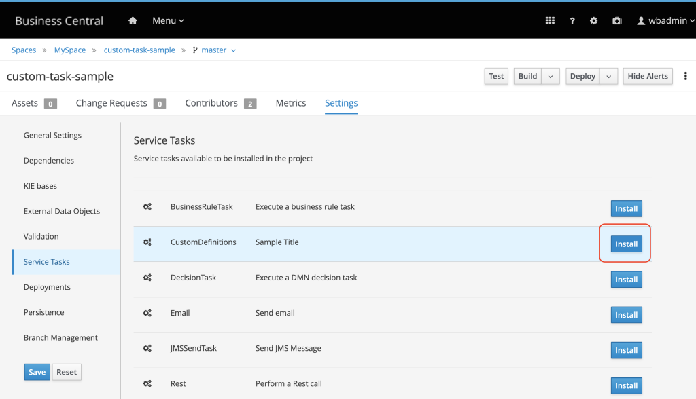
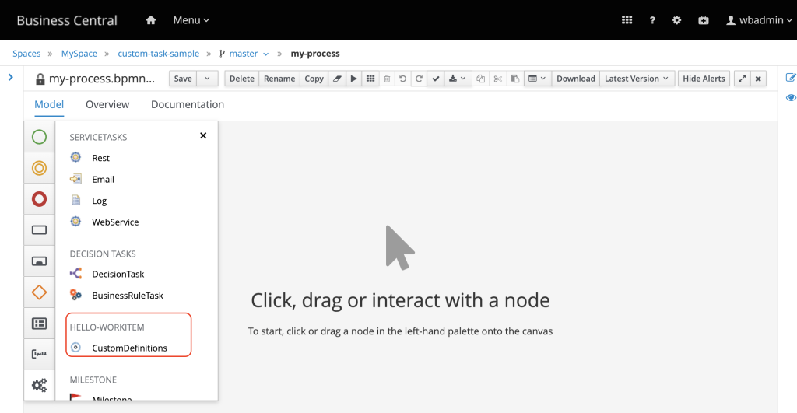

Delivering domain logic with Custom Tasks
Custom Tasks, a.k.a. custom Work Items are used when the natively provided components are not clear enough to demonstrate the required domain demands. See examples of domain-specific tasks that a business user would find useful to have available in the process designer:
- Enhance customer data;
- Validate Personal ID against Official State Service;
- Check customer health plan;
- Calculate tax over an acquisition;
Creation of custom work item handler demands the involvement of a developer which knows Java. Once developed and deployed, the custom WIH will be displayed in the process designer components tab, along with the other bpmn2 tasks. In this way the business automation specialists can drag and drop it into the flow, and care only about the parameters, and not about the logic execution itself.
Let’s separate the Custom WIH in four topics:
- Development: Creation of the project and development of the core logic.
- Deployment: Provision of the custom tasks in a service repository.
- Installation: Act of choosing available tasks from the service repository and installing into a Business Central.
- Usage: Using the new custom task in process design.
Once developed, deployed and installed, the custom task is displayed in the process designer pallet, under the service tasks option ready to be used during the authoring phase.
Development
To develop a custom WI, a new Java project needs to be created. This project can be created from scratch or from an official jBPM maven archetype.
Here is some important information the developer should know:
- Creating the project that will hold the WI, based on the archetype will provide all the necessary structure including test samples; It will also provide generation, deployment and installing features.
- To use the archetype it is necessary to clone the project jbpm-work-item to the local environment. This will eliminate a lot of manual work and save dev time.
- The archetype is org.jbpm.jbpm-workitems-archetype, and it is available in the project https://github.com/kiegroup/jbpm/tree/master/jbpm-workitems/jbpm-workitems-archetype .
- The project is Maven based and can be edited in your favorite IDE; The project core is consisted initially by one class: CustomWorkItemHandler.java (it may have a different prefix other than “Custom”)
- In this class is the method where the developer should code the domain specific custom logic, executeWorkItem. This method is executed when your task is activated;
- Then, if the task finishes successfully, the engine will trigger the method completeWorkItem;
- If the task gets aborted, the abortWorkItem method will be triggered.
Creating a custom task
Let’s see how to create it using a maven archetype org.jbpm.jbpm-workitems-archetype which provides all the basic starters already set and ready to use.
[INFO] For versions prior to jBPM 7.40.0 , it is required to use JDK 8. You can confirm you Java version by running the “java -version” command on your terminal. Check details here: https://issues.redhat.com/browse/JBPM-9204
The first step is to download the project which contains the official work item archetype:
$ mkdir ~/projects/jbpm-getting-started-lab/ && cd ~/projects/jbpm-getting-started-lab/ $ git clone https://github.com/kiegroup/jbpm-work-items $ cd jbpm-work-items $ mvn clean install
It might take a while until the dependencies are downloaded. Then, it is possible to create a new project using the archetype:
$ mvn archetype:generate -DarchetypeGroupId=org.jbpm -DarchetypeArtifactId=jbpm-workitems-archetype -DarchetypeVersion=7.40.0-SNAPSHOT -DgroupId=org.kie.learning -DartifactId=hello-workitem -DclassPrefix=Custom -Dversion=7.40.0-SNAPSHOT -DarchetypeCatalog=local
The following parameters can be changed according to your environment and needs.
- artifactId: name of your project
- groupId: group id used in your project
- classPrefix: will be appended to the work item files;
- archetypeVersion: Should be set according to the version of jBPM you just cloned. You can check that on the
pom.xmlusing the command
$ head -10 ~/projects/jbpm-getting-started-lab/jbpm-work-items/pom.xml
After executing the archetype generation command, Maven will download all the required libs to build the project. You will be asked to confirm if the data is correct. If it is correct, input Y and press enter.
A new project will be created in the current directory with the name of your artifactId, in this example, hello-workitem. The developer can import the project to eclipse, check its structure, created classes, annotations, tests and implement the custom logic.
Once the development is done, compile the project with mvn clean install. The file jar file is created inside the target folder.
Now, it is ready to be deployed to jBPM and configured in BA Projects.
Deployment
Once the coding phase is done, the project should be compiled and installed in a maven repository which is visible for Business Central (during authoring) and for Kie Server (for execution).
Compile the project using the command below and the jar will be available inside target folder.
$ cd hello-workitem/
$ mvn clean packageInstall it into the maven repository or do this using business central UI.
- Access Business Central settings (right up corner settings icon), and access Service Tasks Administration menu.

- Click on “Add Service Task” button and upload the jar generated inside your project target folder i.e.
~/projects/labs/hello-workitem/target/hello-workitem-7.40.0-SNAPSHOT.jar.


- After deploying it, look for it in the task list and enable it.

If you open the classsrc/main/java/org/kie/learning/CustomWorkItemHandler.java, you will see the class-level annotation defining this WIH name as “CustomDefinitions”.The custom WIH will now be available to be installed in any project. Let’s proceed.
Installation
Now that your Business Central and Kie Server have access to your custom task (the jar is in the maven repository), the business application can be configured.
- Access the project, and open the project settings;

- Select the “Service Tasks” menu
- Locate your custom task in the list and click on the “Install” button.

- Check if it is properly configured under Deployment, Work Item Handler, if the WIH with the name you configured and class are present, for example:
CustomDefinitions,new org.kie.learning.CustomWorkItemHandler()
- Hit the save button.
If you open a new business process and check the tasks, you will be able to see your custom task:

That’s it, you can now create custom tasks with so that the user who is authoring business process can re-use domain logic in a more customize and visible way.
This blog post is part of the fourth section of the jBPM Getting started series:
Effective modeling, Integration and Delivery.